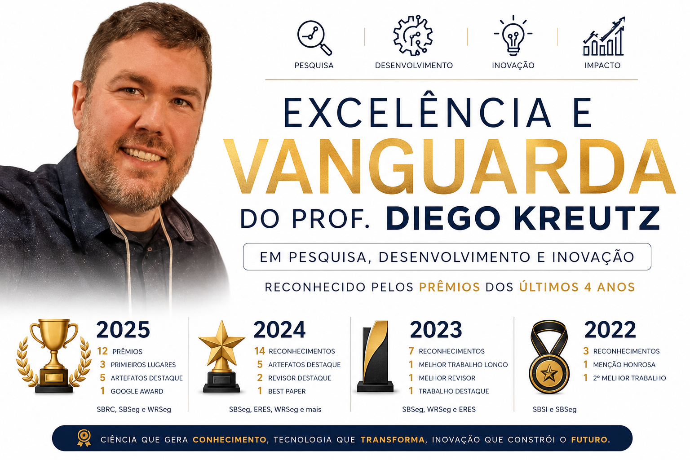
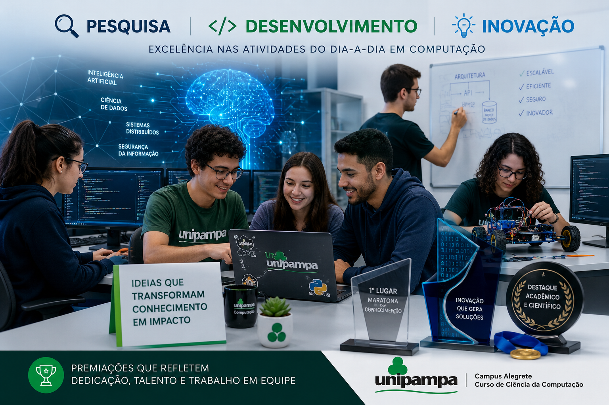

Em um cenário em que a maioria dos pesquisadores celebra um ou dois prêmios ao longo de uma década, o professor Diego Kreutz, da Universidade Federal do Pampa (UNIPAMPA), acumula um histórico que chama a atenção mesmo para os padrões da área. Apenas no quadriênio 2022 a 2025, o pesquisador e suas equipes receberam mais de 30 premiações e reconhecimentos em eventos científicos da Sociedade Brasileira de Computação (SBC) e parceiros, abrangendo desde melhor artigo e melhor ferramenta até menções honrosas, prêmios de artefatos destaque e distinções como Melhor Revisor.
Trata-se de um volume incomum, que dificilmente é alcançado mesmo por grupos consolidados em grandes centros de pesquisa. A consistência ao longo de quatro anos, com curva ascendente, indica não apenas mérito individual, mas a maturação de um ecossistema de pesquisa e desenvolvimento de excelência sediado na UNIPAMPA.
- 3 primeiros lugares
- 5 artefatos destaque
- 1 Google Award
- SBRC, SBSeg e WRSeg
- 5 artefatos destaque
- 2 revisor destaque
- 1 best paper
- SBSeg, ERES, WRSeg e mais
- 1 melhor trabalho longo
- 1 melhor revisor
- 1 trabalho destaque
- SBSeg, WRSeg e ERES
- 1 menção honrosa
- 1 2º melhor trabalho
- SBSI e SBSeg
Prêmios que medem qualidade, não apenas quantidade
Mais do que o número absoluto, o que chama a atenção é a diversidade qualitativa dos reconhecimentos. A lista inclui prêmios de melhor artigo em trilhas principais, melhores ferramentas em salões de ferramentas, artefatos destaque, melhor revisor e menções honrosas, distribuídos por diferentes eventos da SBC, como SBSeg, SBRC, SBSI, WRSeg e ERES. Em 2024, um artigo de Kreutz e colaboradores chegou a ser considerado para o Test of Time Award da ACM SIGCOMM, uma das honrarias mais prestigiadas no cenário internacional em redes de computadores, concedida a trabalhos cujo impacto se manteve relevante ao longo de uma década.
Esse tipo de portfólio reflete duas características que costumam estar em tensão na pesquisa acadêmica: produtividade e qualidade. Não se trata de produção volumosa em troca de profundidade, nem de poucas contribuições isoladas. O conjunto sugere consistência, planejamento de longo prazo e atenção contínua a critérios elevados de rigor técnico e metodológico.
Ciência aberta no centro da estratégia
Parte expressiva das premiações recentes está diretamente associada a artefatos científicos, ou seja, aos códigos, dados e ferramentas que sustentam os experimentos e resultados publicados em artigos. Somente no SBSeg 2024, equipes ligadas ao pesquisador receberam cinco prêmios de Artefato Destaque, com ferramentas como IWSHAP, MH-AutoML, MH-FSF, MalSynGen e SigAPI AutoCraft. Em 2025, somam-se VulnSyncAI, Cloud AutoDroid, MalDataGen e o conjunto da Anonimização.
Esse perfil de premiações conversa diretamente com a atuação de Kreutz como um dos articuladores nacionais do novo modelo brasileiro de avaliação de artefatos científicos, recentemente reportado em artigo na ACM SIGCOMM Computer Communication Review. Os mesmos princípios defendidos no plano da política científica — disponibilidade, funcionalidade, sustentabilidade e reprodutibilidade — são aplicados, na prática, aos projetos desenvolvidos por seus grupos de pesquisa. O resultado é um ciclo virtuoso: pesquisa de qualidade gera artefatos de qualidade, que são reconhecidos pela comunidade e que, por sua vez, alimentam novas pesquisas e formação de estudantes.

Reconhecimento também na sala de aula
A excelência não se manifesta apenas em laboratórios e conferências. No mesmo período, o professor recebeu reconhecimentos vindos diretamente dos estudantes: foi paraninfo da turma de Ciência da Computação da UNIPAMPA em 2022 e em 2023, e Professor Homenageado da turma em 2024. São distinções concedidas pelos próprios formandos, que escolhem quem consideram referência em sua trajetória acadêmica. Esse tipo de reconhecimento, somado aos prêmios científicos, desenha um perfil raro: o de um pesquisador que é, simultaneamente, referência em pesquisa, formador respeitado pelos alunos e articulador nacional na sua área.
Um polo de pesquisa em consolidação
É importante destacar que muitos dos prêmios recebidos envolvem trabalhos conjuntos com estudantes de graduação e de pós-graduação, colaboradores de outras instituições brasileiras e parceiros internacionais. Cada Artefato Destaque, cada melhor ferramenta, cada melhor artigo representa horas de orientação, depuração de código, escrita técnica cuidadosa e revisão por pares. Em outras palavras, o número de mais de 30 premiações expressa também o trabalho coletivo de equipes formadas e qualificadas dentro da UNIPAMPA.
Essa trajetória reforça o papel da UNIPAMPA como um polo emergente em Computação no Sul do país, em sintonia com outras iniciativas inovadoras da Universidade, como o Bacharelado em Inteligência Artificial (BIA), primeiro curso de IA clean slate do Brasil, e a recém-criada disciplina de Laboratório de Engenharia de Artefatos de Software. Pesquisa premiada, ensino de fronteira e formação de qualidade convergem para um mesmo projeto institucional.
O que essa marca representa
"Em pesquisa científica, prêmios não são fim, mas indicador. Sinalizam que a comunidade especializada, formada por pares anônimos que avaliam trabalhos com rigor, reconhece valor, originalidade e qualidade no que está sendo produzido."
Acumular mais de 30 reconhecimentos em quatro anos, em uma área tão competitiva quanto a Computação, é inédito para o histórico recente da UNIPAMPA e raro no cenário nacional. Mais do que celebrar um número, a Universidade tem motivos concretos para enxergar nesse desempenho uma demonstração de que pesquisa de excelência é possível, sustentável e replicável no interior do Rio Grande do Sul, quando há foco, método e compromisso com qualidade.